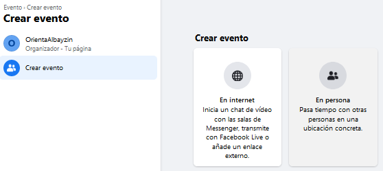

Eventos
El menú permite programar eventos en tu página de Facebook. La utilidad de los eventos es organizar una actividad para darles a conocer alguna cosa que nos afecte, algo que queramos divulgar, un acto que pretendemos organizar, una exposición, etc. Lo que hace el sistema es invitar a los contactos seleccionados o a todos a dicho evento. Y cada contacto puede decidir por borrarlo o dar alguna de las respuestas: Asistiré, Quizás, y No asistiré. Las respuestas Asistiré y Quizás hacen que el evento aparezca en el muro de dicho contacto, pero si el contacto elige la opción No asistiré dicho evento desaparece de su muro.
Facebook tiene la posibilidad de poder agrupar a nuestros contactos en grupos. Tan sencillo como ir a la pestana de amigos (la vimos en la barra de inicio y navegación general y aparece con el símbolo ), e ir agregando nombres a los grupos. De esta forma creamos una especie de agenda en la que clasificamos a quienes tenemos como amigos en función de nuestros intereses. Para cuando tenemos que invitar a gente a un determinado evento, o para darles a conocer alguna cosa que nos afecte o que queramos divulgar, viene muy bien tenerlos segmentados y clasificados.
La primera vez que entramos en la pestaña nos aparece un menú como el siguiente:
Si tenemos algún evento, lo veremos. Si no hay ninguno, podemos crearlo pulsando en . Al pulsarlo nos aparece la ventana de creación de evento:

Podemos elegir dos tipos de eventos: uno de tipo chat de video o retransmisión, y luego el de tipo reunión. En ambos casos, los datos a rellenar son los siguientes:
Pudiendo elegir a quien invitamos, fechas, descripción, ubicación y categoría.
En el caso de los eventos de internet, el sistema nos permitirá elegir el sistema a usar y nos da la posibilidad de emplear Facebook Live, generando en este caso un enlace para poderse conectar.